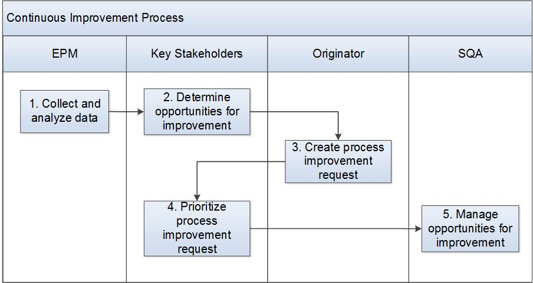

Continuous Improvement Process¶
The purpose of this process is to continually improve the program release effectiveness and efficiency through its processes aligned with the business/customer needs.
The Senior Management is responsible for this process and has the authority to accept/reject/defer changes to the lifecycle processes. The SQA Lead is responsible for executing the approved process improvements.
Entry Criteria |
|
Inputs |
|
Exit Criteria |
|
Outputs |
|
Activities¶

Step # |
Activity Name |
Description |
|---|---|---|
1 |
Collect and analyze data |
The program team is responsible for collecting and analyzing the program data to understand the strengths and weaknesses of the existing processes. The EPM is responsible for coordinating the feedback collection. Data may be collected from Sprint review and retrospective sessions, audits (e.g., CM?? and Quality/Process), reviews/verifications, validations and tests performed. Reports may include:
|
2 |
Determine opportunities for improvement |
Process Improvement opportunities (need for improvement) are documented and maintained in the Process Improvement repository (e.g., Trace) —confirm with Kitty/Martin. The triggers for improvement opportunities include:
|
3 |
Create process improvement request |
Any project team member can create a process improvement request. The request includes details such as description of the improvement opportunity, reference to an existing process (if requesting a change to existing process), benefits and impact of not implementing the improvement opportunity. See the `Guidelines - Trace Document <./WRLinuxTraceGuideline.docx>`__ for guidelines for submitting Process Improvements. —confirm with Kitty/Martin |
4 |
Prioritize process improvement request —confirm with Kitty/Martin** |
The Key Stakeholders (e.g., Senior Management, Management Representative) review and decide on the disposition of the process improvement request. The request is accepted and recommended for implementation, rejected based on redundancy, inapplicability or other criteria or deferred for future consideration. |
5 |
Manage process improvement request implementation —confirm with Kitty/Martin** |
The SQA may create an individual plan for improvement or choose to record the improvement opportunity as an action item by following the Action Item and Issues Process. Implement the improvement as per the plan and document the results. The SQA is responsible for tracking and reporting status to the Key Stakeholders (e.g., Originator, Senior management, Program team members). |
Change Log¶
Date |
Change Request ID |
Version |
Change By |
Description |
05/14/2020 |
N/A |
0.1 |
Shree Vidya Jayaraman |
Initial Draft |